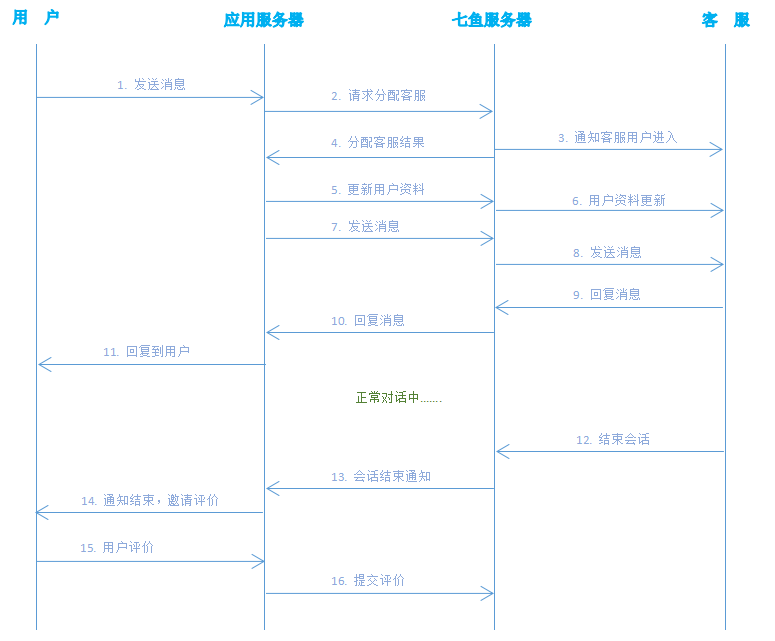

七鱼消息接口向开发者服务器提供了与七鱼服务器交互的接口，通过消息接口，开发者服务器可以自己控制访客与客服的交互行为。关于消息接口调用方式的参考代码以及将微信消息转发到七鱼的快捷方式，可参考github。
下面是一次完整的访客咨询客服的调用时序图：

正常流程说明：
异常流程说明：
七鱼服务器和您的服务器进行数据传递时，POST请求会带以下这些参数：
| 参数 | 参数说明 |
|---|---|
| appKey | 你的企业的appKey (仅在您的服务器向七鱼服务器发送数据时需要，七鱼服务器向您的服务器发送数据时无此参数) |
| time | 当前 UTC 时间戳，从 1970 年 1 月 1 日 0 点 0 分 0 秒开始到现在的秒数 |
| checksum | SHA1(appSecret + md5 + time), 三个参数拼接的字符串，进行SHA1哈希计算，转化成16进制字符(String，小写) |
| eventType | 七鱼服务器向开发者服务器推送事件时的事件类型。（开发者服务器向七鱼服务器发送请求时无此参数） |
其中，checksum 用于校验数据的完整性，其计算规则中，AppSecret 可在七鱼管理页面「设置」->「消息接口」页面找到，md5 为整个请求 json 字符串的 md5 哈希值（小写形式），即 md5 = MD5(content).toLowwerCase()，如果是上传文件，则是整个文件内容的 md5，time 就是请求参数中的 time。处于安全性考虑，每个 checksum 的有效期为 5 分钟，请确认发起请求的服务器是与标准时间同步的，比如有NTP服务。
计算 checksum 的 Java 示例代码如下：
public class QiyuPushCheckSum {
private static final char[] HEX_DIGITS = {'0', '1', '2', '3', '4', '5', '6', '7', '8', '9', 'a', 'b', 'c', 'd', 'e', 'f'};
public static String encode(String appSecret, String nonce, String time) {
String content = appSecret + nonce + time;
try {
MessageDigest messageDigest = MessageDigest.getInstance("sha1");
messageDigest.update(content.getBytes());
return getFormattedText(messageDigest.digest());
} catch (Exception e) {
throw new RuntimeException(e);
}
}
private static String getFormattedText(byte[] bytes) {
int len = bytes.length;
StringBuilder buf = new StringBuilder(len * 2);
for (int j = 0; j < len; j++) {
buf.append(HEX_DIGITS[(bytes[j] >> 4) & 0x0f]);
buf.append(HEX_DIGITS[bytes[j] & 0x0f]);
}
return buf.toString();
}
}
重要提示: 本文档中提供的所有接口均面向开发者服务器端调用，用于计算 checksum 的 AppSecret 开发者应妥善保管,可在应用的服务器端存储和使用，但不应存储或传递到客户端，也不应在网页等前端代码中嵌入。
除了向七鱼服务器发送消息和请求，七鱼也会向开发者服务器推送一些消息和事件。目前会推送以下事件：
为了接收这些事件通知，开发者需要在「设置」->「消息接口」页面设置接收的 url。
请注意：
| 错误码 | 说明 |
|---|---|
| 14001 | appKey 不正确 |
| 14002 | checksum 校验出错 |
| 14003 | 传递的 time 参数不正确 |
| 14004 | 内容格式不是json，或者缺乏必备的字段，或者参数不正确 |
| 14005 | 没有客服在线 |
| 14006 | 用户需要排队 |
| 14007 | 用户没有请求过客服 |
| 14010 | 没有客服在线，且留言功能是关闭的。 |
| 14500 | 服务器内部错误 |
| 14515 | 没有权限 |
使用消息接口的方式接入七鱼客服时，如果用户需要联系客服，则先将消息发送到开发者服务器，然后在用应用服务器发送到七鱼的服务器，有七鱼服务器再发送给对应的客服。客服回复消息后，消息先走到七鱼的服务器，然后由七鱼服务器发送给在管理后台填写的事件接收 url 上，最后再发给用户。
目前仅支持开发者服务器替用户向客服发送消息。
发送消息时，如果用户尚未分配过客服，该消息将自动转给机器人，由机器人回答。如果需要发送消息给人工客服，可以先调用 请求分配客服，等分配到一个客服后再发送消息。
为了防止因网络延时造成的错误，如果用户在上一次会话结束后的10秒内又发了消息，这条消息将会自动发给上一个会话的客服。
POST 请求为：
POST https://qiyukf.com/openapi/message/send?appKey=1064deea1c3624c9ee26d1de5ce8481f&time=1463216914&checksum=e72be4487b6fc03e0f914fc11e4053d771598d93
Content-Type:application/json;charset=utf-8
请求内容示例如下：
文本消息：
{
"uid":"user1",
"msgType":"TEXT",
"content":"七鱼，你好。"
}
图片消息：
{
"uid":"user1",
"msgType":"PICTURE",
"content":
{
"url": "http://url_of_image",
"size": 10000,
"md5": "xxxx",
"w": 200,
"h":200
}
}
语音消息：
{
"uid":"user1",
"msgType":"AUDIO",
"content":
{
"url": "http://url_of_audio",
"size": 10000,
"dur": 10000,
"md5": "xxxx"
}
}
接口参数说明如下：
| 参数 | 是否必须 | 参数说明 |
|---|---|---|
| uid | 是 | 开发者的应用里的用户ID。 |
| msgType | 是 | 消息类型。（目前仅支持 TEXT, PICTURE, AUDIO 三种，分别是文本，图片和语音消息）。 |
| content | 是 | 消息内容。文本消息是文本内容，图片和语音消息则是描述的 json， 该字段长度限制最大为 4000 个字符。 |
| url | 是 | 图片，语音消息的文件 url。请保证该 url 不会存在跨域访问问题。 如果不能跨域访问，请使用下面的文件上传接口将文件上传到七鱼服务器，然后使用返回的 url。 |
| size | 是 | 文件大小，单位为 byte。 |
| md5 | 是 | 文件内容的 MD5。 |
| w | 否 | 图片消息中图片的宽度，正确传递该值可以提升客服的浏览体验。 |
| h | 否 | 图片消息中图片的高度，正确传递该值可以提升客服的浏览体验。 |
| dur | 是 | 语音消息中语音的持续时间，单位为 毫秒。 |
响应示例如下：
{
"code": 200
}
响应参数说明如下：
| 参数 | 参数说明 |
|---|---|
| code | 错误码。200表示发送成功。 |
收到的POST请求如下：
POST https://QIYU_MSG_URL?eventType=MSG&time=1463217187&checksum=2f13932c4b7c6888b12360a85261a11b8b543f64
Content-Type:application/json;charset=utf-8
请求内容示例为：
{
"uid":"user1",
"content":"2222",
"staffId":143,
"timeStamp":1463216914316,
"staffName":"lantian",
"msgId":"8ca1c9fb30c40aa6cc390844e2756fac",
"msgType":"TEXT"
}
除了和发送接口相同的参数外，其他参数说明如下：
| 参数 | 参数说明 |
|---|---|
| timeStamp | 消息时间戳，从 1970 年 1 月 1 日 0 点 0 分 0 秒开始到现在的毫秒数。 |
| staffId | 发送该消息的客服ID。 |
| staffName | 发送该消息的客服名字。 |
我们提供了两种上传文件的方式，一种是 MultiPart 方式，一种是发送文件内容 base64 运算后的字符串的方式。 上传文件时，同样需要计算checksum，在这两种上传方式中，计算 checksum 的 md5 均为文件内容的 md5 的小写。 两种方式对于文件大小限制均为 5M。
MultiPart 方式
使用 MultiPart 方式上传的 POST 请求为：
POST https://qiyukf.com/openapi/message/uploadFile?appKey=1064deea1c3624c9ee26d1de5ce8481f&time=1463217187&checksum=2f13932c4b7c6888b12360a85261a11b8b543f64
Content-Type:multipart/form-data;charset=ISO-8859-1
构造 POST 请求 body 的 java 示例代码如下：
try {
HttpPost post = new HttpPost(url);
MultipartEntityBuilder builder = MultipartEntityBuilder.cr
builder.setMode(HttpMultipartMode.BROWSER_COMPA
FileBody fileBody = new FileBody(new File(path)); // 构造 FileBody
builder.addPart("file", fileBody); // 这里 key 必须是 file
post.setEntity(builder.build());
CloseableHttpResponse response = HttpClients.custom().build().execute(post);
// check response
} catch (IOException e) {
e.printStackTrace();
}
返回的响应内容为：
{
"code": 200,
"url": "url_of_file"
}
响应参数说明如下：
| 参数 | 参数说明 |
|---|---|
| code | 错误码。200表示上传成功。 |
| url | 该文件的下载地址。 |
base64 方式
使用 base64 方式上传的 POST 请求为：
POST https://qiyukf.com/openapi/message/sendFile?appKey=1064deea1c3624c9ee26d1de5ce8481f&time=1463217187&checksum=2f13932c4b7c6888b12360a85261a11b8b543f64
Content-Type:text/plain;charset=ISO-8859-1
POST 请求内容为文件内容的 base64 编码字符串，构造 POST 请求 body 的 java 示例代码如下：
try {
HttpPost post = new HttpPost(url);
String content = base64(new File(path));
post.setEntity(new StringEntity(content, ContentType.TEXT_PLAIN));
CloseableHttpResponse response = client().execute(post);
InputStream is = response.getEntity().getContent();
System.out.print(isToString(is));
is.close();
} catch (IOException e) {
e.printStackTrace();
}
返回的响应内容为：
{
"code": 200,
"url": "url_of_file"
}
响应参数说明如下：
| 参数 | 参数说明 |
|---|---|
| code | 错误码。200表示上传成功。 |
| url | 该文件的下载地址。 |
POST 请求为：
POST https://qiyukf.com/openapi/event/applyStaff?appKey=1064deea1c3624c9ee26d1de5ce8481f&time=1463217187&checksum=2f13932c4b7c6888b12360a85261a11b8b543f64
Content-Type:application/json;charset=utf-8
请求内容示例如下：
{
"uid": "user1",
"fromPage": "www.163.com",
"fromTitle": "Netease",
"fromIp": "220.220.2.1",
"deviceType": "Android#xiaomi#5.0",
"productId": "Android package name",
"staffType": 1,
"staffId": 0,
"groupId": 0,
"robotShuntSwitch":0,
"level":0
}
请求参数说明如下：
| 参数 | 是否必须 | 参数说明 |
|---|---|---|
| uid | 是 | 开发者的应用里的用户 ID。 |
| fromPage | 否 | 用户发起咨询客服操作的页面 url，比如商品链接，订单页面等。 |
| fromTitle | 否 | fromPage 页面的标题。 |
| deviceType | 否 | 用户设备类型信息。 |
| productId | 否 | 产品标识，可以是 Android 应用的报名，iOS 应用的 bundleid 等。 |
| staffType | 否 | 请求分配的客服类型，如果传0，表示机器人，传1表示人工。默认为机器人。 |
| staffId | 否 | 只请求该 ID 的客服，客服 ID 可在管理后台查看。 |
| groupId | 否 | 只请求该客服分组 ID 内的客服，分组 ID 可在管理后台查看。 |
| robotShuntSwitch | 否 | 申请人工客服之前是否先申请机器人开关，0代表关闭，1代表启用。 |
| level | 否 | 该访客这次会话的vip等级，从0到11 |
分配客服的逻辑如下，按照优先级从高到低匹配：
响应示例如下：
{
"code": 200,
"staffId": 1234,
"message": "哈哈",
"count":0,
"sessionId": 62927,
"staffName": "lantian",
"staffType": 0,
"staffIcon": "https://ysf.nosdn.127.net/29C25737ABC2524667D223A90FEF156D",
"evaluationModel": {
"title": "模型一",
"note": "二级评价模型",
"type": 2,
"list": [
{
"name": "满意",
"value": 100
},
{
"name": "不满意",
"value": 1
}
]
}
}
响应参数说明如下：
| 参数 | 参数说明 |
|---|---|
| code | 错误码。200表示分配到客服，14005：没有客服在线，14006：需要排队，14010：没有客服在线，且留言功能已关闭。 |
| message | 如果分配到客服，此字段是客服的欢迎语，如果没有分配到客服，则是错误提示信息。 |
| count | 仅返回需要排队时该参数有效，表明排队队列中排在你前面你的人数。如果为0，则表示你排在队列最前面。 |
| sessionId | 会话 ID，后续对会话评价时有用。仅返回分配到客服时该参数有效。 |
| staffId | 客服 ID。 |
| staffName | 客服名字。 |
| staffType | 客服类型，0 表示机器人，1 表示人工会话。 |
| staffIcon | 客服头像的 url |
| evaluationModel | 满意度评价模型，在申请到人工客服时有值，后面根据该模型 value 值进行客服评价 |
| rich_text_greet | 如果设置富文本作为机器人或者人工的欢迎语，这个字段会带上原始的html格式富文本，原message中保留提取出来的纯文本 |
使用该接口可以更新用户的详细资料，并展示在客服会话界面的右上侧「用户资料」tab页看到。具体的数据格式定义可参见轻量CRM对接参数说明。
POST 请求为：
POST https://qiyukf.com/openapi/event/updateUInfo?appKey=1064deea1c3624c9ee26d1de5ce8481f&time=1463217187&checksum=2f13932c4b7c6888b12360a85261a11b8b543f64
Content-Type:application/json;charset=utf-8
请求内容如下：
{
"uid": "user1",
"userinfo":
[
{"key":"real_name", "value":"土豪"},
{"key":"mobile_phone", "hidden":true},
{"key":"email", "value":"13800000000@163.com"},
{"index":0, "key":"account", "label":"账号", "value":"zhangsan" , "href":"http://example.domain/user/zhangsan"},
{"index":1, "key":"sex", "label":"性别", "value":"先生"},
{"index":5, "key":"reg_date", "label":"注册日期", "value":"2015-11-16"},
{"index":6, "key":"last_login", "label":"上次登录时间", "value":"2015-12-22 15:38:54"}
]
}
请求参数说明如下：
| 参数 | 是否必须 | 参数说明 |
|---|---|---|
| uid | 是 | 开发者的应用里的用户 ID。 |
| userinfo | 是 | 用户资料描述，必须是一个 json 数组。 |
响应示例如下：
{
"code": 200
}
响应参数说明如下：
| 参数 | 参数说明 |
|---|---|
| code | 错误码。200表示设置成功。 |
该接口允许用户对当前评价当前客服服务的满意度，满意度评价模型数据 evaluationModel 在请求分配客服接口中返回。根据 evaluationModel 中的 list 数组显示满意度评价项，name 为评价项名称，value 为对应评价值，用户选择某评价项时，将对应 value 值作为下面接口参数 evaluation 的参数值。
POST 请求为：
POST https://qiyukf.com/openapi/event/evaluate?appKey=1064deea1c3624c9ee26d1de5ce8481f&time=1463217187&checksum=2f13932c4b7c6888b12360a85261a11b8b543f64
Content-Type:application/json;charset=utf-8
请求内容示例如下：
{
"uid":"user1",
"sessionId":62927,
"evaluation":100,
"remarks":"你的服务非常棒"
}
请求参数说明如下：
| 参数 | 是否必须 | 参数说明 |
|---|---|---|
| uid | 是 | 开发者的应用里的用户 ID。 |
| sessionId | 是 | 待评价的会话 ID。该会话 ID 可由分配客服的接口拿到。 |
| evaluation | 是 | 评价值来自请求分配客服接口响应参数中 evaluationModel 中的 value 值。 |
| remarks | 否 | 评价备注信息，可以为空 |
响应示例如下：
{
"code": 200
}
响应参数说明如下：
| 参数 | 参数说明 |
|---|---|
| code | 错误码。200表示评价成功。 |
POST 请求为：
POST https://qiyukf.com/openapi/event/queryQueueStatus?appKey=1064deea1c3624c9ee26d1de5ce8481f&time=1463217187&checksum=2f13932c4b7c6888b12360a85261a11b8b543f64
Content-Type:application/json;charset=utf-8
请求内容示例如下：
{
"uid":"user1"
}
请求参数说明如下：
| 参数 | 是否必须 | 参数说明 |
|---|---|---|
| uid | 是 | 开发者的应用里的用户 ID。 |
响应示例如下：
{
"code": 200,
"count": -1
}
响应参数说明如下：
| 参数 | 参数说明 |
|---|---|
| code | 错误码。200表示设置成功，14007表示用户不存在或者没有申请连接客服。 |
| count | 排队队列中排在该用户前面的人数。-1表示已经有客服在接待了。 |
当客服主动发起会话时，或者由其他会话转接时，开发者服务器会收到此通知。目前只有人工会话会收到通知，机器人会话开始不会发送通知。
开发者服务器收到的POST请求如下：
POST https://QIYU_MSG_URL?eventType=SESSION_START&time=1463217187&checksum=2f13932c4b7c6888b12360a85261a11b8b543f64
Content-Type:application/json;charset=utf-8
请求内容示例如下：
{
"code": 200,
"staffId": 1234,
"message": "哈哈",
"sessionId": 62927,
"staffName": "lantian",
"staffType": 0,
"staffIcon": "https://ysf.nosdn.127.net/29C25737ABC2524667D223A90FEF156D",
"uid": "user1",
"evaluationModel": {
"title": "模型一",
"note": "二级评价模型",
"type": 2,
"list": [
{
"name": "满意",
"value": 100
},
{
"name": "不满意",
"value": 1
}
]
},
"transferFrom": 62917
}
响应参数中各个 key 意义与分配客服的响应参数相同，其中不同的一个参数意义如下：
| 参数 | 参数说明 |
|---|---|
| transferFrom | 如果会话是被转接过来的，会有该字段，值为发起转接的那次会话的ID。 |
会话结束后，开发者服务器会收到此通知。
开发者服务器收到的POST请求如下：
POST https://QIYU_MSG_URL?eventType=SESSION_END&time=1463217187&checksum=2f13932c4b7c6888b12360a85261a11b8b543f64
Content-Type:application/json;charset=utf-8
请求内容示例如下：
{
"code": 200,
"staffId": 1234,
"message": "哈哈",
"sessionId": 62927,
"staffName": "lantian",
"staffType": 0,
"staffIcon": "https://ysf.nosdn.127.net/29C25737ABC2524667D223A90FEF156D",
"uid": "user1",
"closeReason":0,
"transferTo":62928
}
响应参数中各个 key 意义与分配客服的响应参数相同，另外两个不同的key值意义如下：
| 参数 | 参数说明 |
|---|---|
| closeReason | 会话关闭原因，其中，0表示客服关闭，2表示用户长时间不说话，自动关闭，3表示有机器人转到人工会话了，4表示客服离开导致关闭，5表示转接会话。 |
| transferTo | 如果会话是被转接出去了，会有该字段，值为转接到的会话ID。 |
为了提高用户参评率，七鱼为客服增加了主动邀请用户评价会话的入口。对于使用消息接口的企业，此处相应的增加了一种事件类型通知，通知事件类型为：EVA_INVITATION。
客服主动邀评后，开发者服务器会收到如下POST请求：
POST https://QIYU_MSG_URL?eventType=EVA_INVITATION&time=1463217187&checksum=2f13932c4b7c6888b12360a85261a11b8b543f64
Content-Type:application/json;charset=utf-8
请求内容示例如下：
{
"sessionId": 62927,
"staffId": 1234,
"staffName": "lantian",
"staffType": 0,
"staffIcon": "https://ysf.nosdn.127.net/29C25737ABC2524667D223A90FEF156D",
"uid": "user1"
}
响应参数中各个 key 意义与分配客服的响应参数相同。